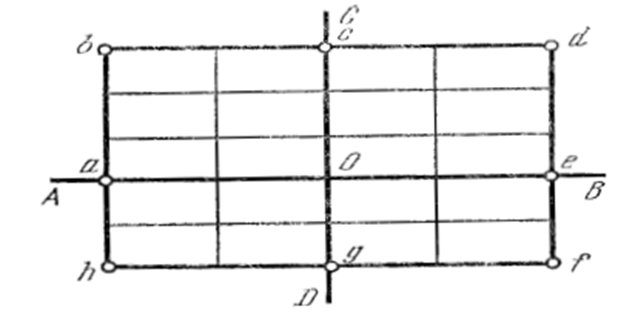
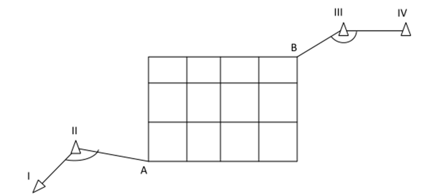

10-амалий иш Мавзу: Геодезик қурилиш тўри
Геодезик қурилиш тўри – бино ва иншоотларни қуришда режалаш асосининг энг самарали тури
ҳисобланади. У квадрат ёки тўртбурчак учларида жойлашган таянч пунктлари тизими кўринишида
бўлади. Қурилиш тўри иншоотнинг асосий ўқларини жойга кўчиришда ва ижроий план олишда планли
ҳамда баландлик асоси вазифасини бажаради.
Қурилиш тўри геодезик ишларни енгиллаштириш мақсадида барпо этилади, у бино ва
инженерлик тармоқлари ўқларини тез ва юқори аниқликда қурилиш майдонига кўчиришга ёрдам
беради.
Қурилиш тўрини барпо қилиш ишлари бўйича тўпланган тажрибаларга асосан, унинг аниқлиги
қуйидаги талабларга жавоб бериши керак:
а) қурилиш тўрининг ёнма-ён жойлашган пунктларининг ўзаро ҳолати хатолиги 1:10000 дан
ошмаслиги, яъни тўр узунлиги 200 м бўлганда, ўзаро ҳолат хатолиги 2 см дан катта бўлмаслиги
керак;
б) тўрнинг тўғри бурчаклари 20 аниқликда тузилиши керак;
в) тўрнинг энг заиф жойдаги пункти ҳолатининг хатолиги бош таянч пунктга нисбатан 1:500
план
масштабида 0,2 мм дан ошмаслиги, яъни 10 см бўлиши керак.
Қурилиш тўрини барпо этиш технологияси қуйидаги босқичлардан иборат:
1. Бошлангич йўналишларни лойиҳалаш ва жойга кўчириш. Тўрни ориентирлашга қўйиладиган
асосий талаб тўр координата ўқларининг иншоот асосий ўқларига параллел бўлишидадир. Қурилиш
тўри лойиҳасини жойга кўчириш учун бошланғич йўналиш танлаб олинади. Кўпчилик ҳолатларда
бошланғич йўналишни жойга кўчириш учун, қурилиш майдонида
жойлашган планли геодезик асос пунктлари ишлатилади. Бошланғич
пунктлар ва қурилиш тўри учлари координаталарига асосан, тескари
геодезик масала ечиш йўли билан жойга кўчириш учун керакли бўлган
режалаш элементлари ҳисобланади.
2. Тўрни батафсил режалаш. Бу босқич бошланғич нуқталар жойда белгилангандан кейин
амалга
оширилади. Қурилиш тўрини батафсил режалаш ўқлар (осевой) ва редукциялаш усулларида амалга
оширилади.
Қурилиш тўрини ўқлар усулида режалаш қуйидаги тартибда бажарилади. Бошланғич
йўналишларга
асосланган ҳолда жойда бир-бирига перпедикуляр бўлган ўқлар ҳосил қилинади (1-расм).
Марказдан йўналишлар бўйлаб тўр томонларига тенг бўлган кесмалар ўлчанади. Кесмалар
шкалали лента ёрдамида компарирлаш, жой нишаблиги ва температурага бўлган тузатмаларни
ҳисобга олган ҳолда ўлчаб қўйилади. Охирги a, c, e, d нуқталарда перпендикуляр ясалади ва
периметр бўйлаб
ўлчашлар давом эттирилади.
Шундай қилиб, майдончада 4 та полигон ҳосил қилинади. Кейин
аниқланган полигон нуқталари доимий белгилар билан маҳкамланади ва улар
периметрлари бўйлаб 1-разрядли полигонометрия тармоғи ўтказилади

1-расм. Қурилиш тўрини режалаш.
Ўлчанган натижаларга биноан барча нуқталарнинг координаталари аниқланади. Полигон
ичкарисида жойлашган нуқталар координаталари эса
полигонометрия 2-разрядли тармоғини ясаш натижасида амалга оширилади.
Ўклар усули асосан қурилиш майдони нисбатан катта бўлмаган ёки катта аниқлик талаб
қилинмаган ҳолларда қўлланилади.
Бу усулнинг асосий камчилиги ўлчаш хатоларининг йиғилиб бориши бўлиб, бу ўз навбатида
бурчакларнинг 90° дан фарқ қилишига олиб келади. Унинг аниқлиги 3-5 см ни ташкил этади.
Катта хажмдаги бино ва иншоотларни режалашда редукциялаш усулини қўллаш мақсадга
мувофиқдир,
негаки бу усул бинонинг турли элементларини режалашни таъминлайди.
Бу усулнинг моҳияти қуйидагидан иборат. Аввало оддий теодолит йўли аниқлигида нуқталар
жойга
кўчирилади ва вақтинча белгилар билан маҳкамланади. Кейин периметр бўйлаб 1-разрядли
полигонметрия, ички нуқталар бўйлаб эса2- разрядли полигонометрия тармоғи ўтказилади ва
барча нуқталарнинг координаталари ҳисобланади.
Ҳисобланган координаталар лойиҳавий координаталар билан солиштирилади ва редукциялаш
элементлари аниқланади. Кейин ҳар бир нуқта тегишли редукция элементига биноан (ишораларини
ҳисобга олган ҳолда) у ёки бу томонга силжитилади ва доимий белгилар билан маҳкамланади.
3. Қурилиш тўрини лойиҳалаш ва тенглаштириш.Қурилиш тўрини тегишли аниқликда лойиҳалаш
учун
бир қанча талаблар қўйилади.
Қурилиш тўрини лойиҳалаш даврида тўр учлари ер ишлари бажариладиган жойларга тўғри
келиб
қолмаслигига аҳамият берилади.
Қурилиш тўрининг ўлчамлари, унинг аниқлиги ва жойнинг шароитига боғлиқ равишда 2 ёки 3
босқичда тузилиши мумкин.
Тўр 3 босқичда тузилган ҳолатда, унинг биринчи босқичи триангуляция, иккинчи босқичини
1-разрядли полигонометрия ташкил этади. Бундай турдаги асосни катта майдонларда барпо этиш
мақсадга мувофиқдир.
Нисбатан кичик майдонларда қурилиш тўри 2-босқичда тузилади.
Қурилиш тўрининг бирор бир учи координата боши этиб белгиланади ва мумкин қадар
триангуляция пункти билан боғланади. Бу ҳолда тўрни режалаш ишлари осонлашади (2-расм).

2-расм. Қурилиш тўрини режалаш.